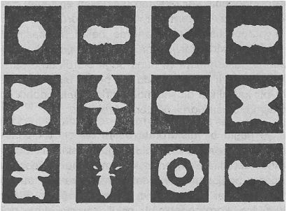
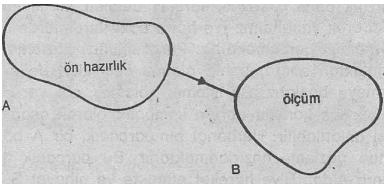

10) TÜM NESNELERİN BÜTÜNSELLİĞİ
Son beş bölüm boyunca anlattığımız spiritüel gelenekler birçok detayda birbirlerinden farklılık göstermelerine rağmen, dayandıkları temel dünya görüşü, esas itibarı ile aynıdır. Bu dünya görüşü, «mistik tecrübe»ye dayanmaktadır. Mistik tecrübe; ise, gerçekliğin akıl-dışı ve doğrudan doğruya yaşanması anlamına gelmektedir. Bu şekilde yaşanan bir gerçeklik tecrübesi, onu uygulayan mistikçilerin coğrafi, tarihî ya da kültürel etkenlerinden bağımsız olarak herkes için aynı olacaktır. Belki bir Hindu ile bir Taoist bu tecrübenin bazı farklı yönlerini vurgulayacaklardır. Ya da bir Japon Buddhist'i, yaşadığı tecrübeyi belki de bir Hint Buddhist'inin kullanmadığı kavramlarla anlatmaya çalışacaktır. Ama bu küçük detayları bir kenara itersek, bu gelenekler aracılığı ile ortaya çıkan dünya görüşünün temellerinin esasen aynı olduğunu görebiliriz. İlginç olan, bu temellerin, modern fiziğin ortaya koyduğu temel özelliklerle de çok benzeşmeleridir.
Doğu'da ortaya çıkan dünya görüşünün en önemli özelliği ve belki de esası, evrendeki tüm nesnelerin ve fenomenlerin bütünselliğini ve karşılıklı etkileşimlerini kavrayabilmiş olmalarıdır. Yani dünyada gördüğümüz bütün fenomenler, bu temel «tekliğin» parçasal dışa vurumundan başka bir şey değildir. Böylece tüm nesneler birbirleriyle bağlantılı ve kozmik bütünün ayrılmaz birer parçası olarak görülmekte ve nihaî (ulaşılabilecek en san) gerçekliğin farklı birer belirişi olarak algılanmaktadırlar. Doğu gelenekleri, sürekli olarak bu nihaî ve bölünemez gerçekliğe atıfta bulunarak tüm nesnelerin bu gerçekliğin farklı bir dışavurumu ve bir parçası olduğunu; belirtmişlerdir. Bu gerçeklik, Hinduizm'de Brahman, Buddhizm'de Dharmakaya, Taoizm'de ise Tao olarak isimlendirilmiştir. Sözü edilen gerçeklik, tüm kavram ve tasarımları aştığından, Buddhist'ler ona «Tathata», yani «oluş» (suchness) demişlerdir.
«Ruh tarafından oluş diye anılan şey, tü;m nesnelerin tekliği ve bütünselliği, yani her şeyi içime alan o büyüklüktür» (1).
Günlük hayat çerçevesinde nesnelerin bütünselliğini ne yazık ki algılayamayız. Aksine, algıladığımız dünyayı birbirinden ayrı nesne ve fenomenlere ayrıştırırız. Fakat bu ayrıştırma ya da sınıflandırma, bir yandan çok faydalı ve gereklidir, çünkü ancak bu biçimde içinde yaşadığımız makro dünya ile başarılı bir uyum kurabilmekteyiz. Fakat öte yandan böyle bir sınıflandırmanın aslında doğanın temel özelliklerinden olmadığını da idrak etmemiz gerekir. Ayrıştırma ve sınıflandırma zihnimizin bir soyutlamasından başka bir şey değildir. Yani birbirinden ayrı ve bağımsız «nesne» ve «fenomenler»den oluşan evrensel bir gerçeklik tasarımına inanmak yalnızca bir hayalden ibarettir. Hindu'lar ve Buddhist'ler bu hayalin, aslında «avidya»ya dayandığını söylerler. Bu da, «maya»nın büyüsü altında bulunan bir aklın cehaletini gösterir. Mistik Doğu geleneklerin ana amacı, aklın meditasyon yardımı ile yeniden ayarlanması, yani sakinleştirilmesi ve toparlanmasıdır. Meditasyon un Sanskritçe'deki ifadelenişi (yani, samadhi) sözlük anlamı ile, «aklî denge» demektir. Bu ise, evrenin temel bütünselliliğini tecrübe edecek aklın sakin ve dengelenmiş durumunu ifade eder.
«Samadhi nin duruluğuna erişmiş olan birisi, her şeyi delip geçebilen bir aydınlanışa sahip olur. Böylece o, evrenin mutlak tekliğinin hemen farkına varacaktır» (2).
Evrenin temel tekliği yalnızca mistik tecrübe edişin en can alıcı unsuru değil, ayrıca ve aynı zamanda modern fiziğin gün ışığına çıkardığı en önemli olgulardan da birisidir. Bu tekillik, ilk olarak atom düzeyinde karşımıza çıkmaktadır. Maddenin derinliklerine in ildikçe, yani atom-altı parçacıkların hüküm sürdüğü dünyaya dalındıkça, söz konusu teklik daha da belirginleşmektedir. Modern fizik ile Doğu felsefesi arasında yapacağımız karşılaştırmalarımızda söz konusu bütünsellik sürekli olarak karşımıza çıkacaktır. Atom-altı fizik ile ilgili fa ilki ı modelleri incelerken, onların, değişik yollar kullanarak da olsa, aynı gerçeği sürekli bir biçimde tekrarladıklarını göreceğiz. Yani maddenin temel öğelerinin ve onlarla ilgili fenomenlerin birbirleriyle bağlantılı, bağımlı ve ilintili olduklarını anlayacağız. Bu öğelerin yalıtılmış varlıklar olarak algılanamayacağını ve fakat bütünün vazgeçilmez birer parçası olarak görülmesi gerektiğini de bu yolla kavrayacağız.
Bu bölümde, Kuantum kuramı çerçevesinde, doğada gözlenen temel ve karşılıklı ilişkinin nasıl ortaya çıktığını göreceğiz. Atomsal olgu ve fenomenlerin kuramı olarak sayabileceğimiz Kuantum kuramı, gözlem sürecinin ve gözlem işleminin titiz analizlerinden faydalanılarak bir takım önemli sonuçlara varmıştır.(*). Söz konusu tartışmalara girmeden önce, bir kuramın matematiksel çerçevesi ile onun sözel yorumlanışı arasındaki ayrılığı yeniden vurgulamak isterim. Çünkü Kuantum kuramının matematiksel çerçevesi sayısız başarılı deneylerle onaylanmış ve sınanmıştır. Bundan dolayı bu kuram, tüm atomsal fenomenleri açıklayabilen doğru ve içsel bir anlama sahip olan nadir bir model olarak kabul edilmiştir. Ancak öte yandan aynı kuramım sözel yorumlanışı, yani Kuantum kuramının metafiziği, çok daha az sağlam bir temele dayandırılmıştır. Aslında fizikçiler kırk senedir, kesin ve anlaşılabilir bir metafiziği geliştirmeyi henüz başaramamışlardır.
(*) Tüm matematiksel işlemlerden vaz geçmeme ve analizleri bir hayli basitleştirmiş olmama rağmen, yapacağımız tartışmanın kuru ve teknik gibi görünmesini ne yazık ki önleyemedim. Okuyucu bunu «yoga'sal» bir idman olarak algılarsa daha iyi yapar, çünkü Doğu felsefesinde sıkça rastlanan bu tür durumlarda da olduğu gibi, bu tecrübe «neşeli» olmasa bile, sonuçta derin bir aydınlanmaya yol açacaktır.
Aşağıdaki tartışma, Kuantum kuramımın Kopenhagen yorumlanışı denilen, 1920'lerde Bohr ve Heisenberg tarafından geliştirilen ve günümüzde bile çok rağbet gören bir yorum sistemlidir. Benim açıklamalarım genelde, Kaliforniya Üniversitesi'nden Henry Stapp'ın(3) çalışmaları doğrultusunda gelişecektir. Böylece, söz konusu kuramın bazı öğeleri üzerinde önemle durulacak ve atom-altı fiziğinde sıkça rastlanan belirli bir deneysel durum göz önünde tutulmuş olacaktır(*). Stapp'ın çizdiği yol, bize doğanın birbiriyle nasıl bağlantılı olduğumu çok güzel bir biçimde gösterecektir. Ayrıca Stapp, Kuantum kuramını, daha sonra ele alacağımız atom-altı parçacıkların izafiyet modellerini de kapsayacak biçimde geliştirmeye çalışmıştır.
(*) Kuantum kuramının önemli diğer öğelerini, ilgili bölümlerde ele almaya çalışacağız.
Kopenhagen yorumunun hareket noktası, fiziksel dünyayı gözlenen sistem (yani, «nesne») ve gözlemleyen sistem (yani «gözlemci») olarak ikiye ayırması idi. Gözlenen sistem bir atom, atom-altı bir parçacık, bir atomsal süreç ya da benzeri bir olgu olabilmektedir. Gözlemleyen sistem ise, deney araçlarını ve düzenini, bir ya da birkaç gözlemciyi kapsamaktadır. Ancak bu noktada önemli bir sorun ortaya çıkmaktadır: Çünkü söz konusu iki sistem, farklı biçimlerde ele alınıp, değerlendirilebilmektedir. Yani gözlemleyen sistem, klasik fiziksel kavramlarla açıklanırken, aynı kavramlar gözlemlenen «nesne»-nin tanımlanmasında tam anlamıyla kullanılamamaktadır. Atomsal düzeylere inildiğinde, klasik kavramların artık geçersiz olduğunu bildiğimiz halde, onları, yaptığımız deneyleri ve bu deneylerin sonuçlarını anlatıp, açıklamak için yine de kullanmaktayız. Ve ne yazık ki, bu karışıklıktan kurtulmanın çaresini de daha bulamadık. Yani klasik fiziğin kullandığı teknik dil, günlük dilimizin yalnızca biraz daha geliştirilmiş bir biçimidir ve bu dil, deneysel sonuçlarımızı tartışabileceğimiz tek araçtır.
Gözlemlediğimiz sistemler, Kuantum kuramında «olasılıklar» olarak ifade edilmektedir. Bunun anlamı ise belirli bir atom-altı parçacığının belirli bir anda nerede olacağını ya da atomsal bir olayın nasıl gelişeceğini önceden kesinlikle belirleyemediğimizdir. Yapabileceğimiz tek şey, olasılıkları tahmin etmektir. Günümüzde teknik araçlarımızla belirleyebildiğimiz atom-altı parçacıkların büyük bir çoğunluğu, sabit (istikrarlı) değildirler. Yani belirli bir süre sonra kendiliklerinden diğer parçacıklara ayrışırlar (ya da teknik deyimi ile «bozunurlar»). Fakat bu bozunum süresini- kesin olarak önceden belirlemek imkânsızdır. Biz yalnızca, belirli bir süre içinde meydana gelecek bozunumun olasılığını, yani bir başka deyişle, aynı cinsten çok sayıdaki parçacığın ortalama hayat sürelerini belirleyebiliriz. Bunun aynısı, bozunum biçimi (ya da «bozunum modu») için de geçerlidir. Çünkü istikrarlı olmayan bir parçacık genelde birçok parçacık bileşimleri oluşturacak biçimde bozunmaktadır. Ve işte burada da hangi parçacık bileşkesinin meydana geleceğini önceden bilemeyiz. Yapabileceğimiz tek şey, bazı olasılıkları kestirebilmek, yani «çok sayıda parçacığın yüzde altmışı şu biçimde, yüzde otuzu bu biçimde ve yüzde onu da daha başka bir biçimde bozunacaktır» demektir. Bu tür istatistiksel tahminlerin ispatlanıp, doğrulanabilmeleri için çok sayıda ölçümlere gerek duyulduğu da kesindir. Gerçekten de, yüksek-enerji fiziği dalında oluşturulan çarpışma deneyleri sırasında, on binlerce parçacık çarpışmaları kayda geçirilmiş ve analiz edilmiştir. Ancak bu biçimde belirli bir sürecin olasılığını belirleyebilirle imkânı ortaya çıkabilmiştir.
Aslında atom ve atomaltı fiziğinde kullanılan istatistiksel denklemler, fiziksel durum hakkındaki bilgisizliğimizin birer göstergesi sayılmalıdır. Çünkü
burada da, sigorta şirketlerinin ya da kumar oynayanların kullandıkları olasılık yasaları geçerlidir. Kuantum kuramı bize., olasılığın, tüm süreç ve olaylar; idare eden, onlara yön veren atomsal gerçekliğin ve hatta maddenin var oluşunu belirleyen en temel özellik olduğunu göstermiştir. Artık biliyoruz, ki, atom-altı parçacıklar belirli yerlerde belirli bir kesinlikle var olmamaktadırlar. Onlar daha çok, «var olma eğilimleri» göstermekte ve buna bağlı olarak da atomsal olaylar, belirli bir zamanda ve belirli bir yerde, belirli bir kesinlikte oluşmamaktadırlar. Onlar daha çok «oluşma olasılıkları» göstermektedirler.
Örneğin bir elektronun belirli bir anda ait olduğu atomun neresinde bulunduğu, kesinlikle açıklanamamaktadır, Elektronun konumu, onu atomsal çekirdeğe bağlayan çekimse! kuvvetlere ve atomda bulunan diğer elektronların etkisine bağlıdır. Bu koşullar ise, karakteristik bir şekil, ya da kalıbın doğmasına yol açarlar. Bu şekilleri, bir elektrona, bağlı olduğu atomun farklı yerlerinde rastlama eğitimlerinin grafik gösterimi olarak ifade edebiliriz. Aşağıdaki resim, bu olasılık şekillerinin görsel modellerini yansıtmaktadır. Şekilde görülen parlak bölgeler, elektronun bulunma olasılığının yüksek olduğu noktaları, koyu olan bölgeler ise, olasılığın düşük olduğu noktaları göstermektedir. Burada önemli olan nokta, söz konusu şekillerin, bir bütün olarak elektronun belirli bir andaki durumunu göstermesidir. Şeklin içinde, elektronun özel konumundan söz etmek bundan dolayı imkânsızdır. Burada yalnızca belirli yerlerde bulunma eğiliminden konuşmak gerekir. Bu nedenle Kuantum kuramının matematiksel formülasyonu, söz konusu eğitimleri ya da olasılıkları, olasılık fonksiyonu denilen matematiksel bir çokluk ile ifade etmektedir. Bu çokluk (ya da değer), bir elektronun, farklı yerlerde ve farklı anlarda bulunma olasılığı ile doğrudan ilintilidir.

Olasılık dalgalarının bazı görsel modelleri
Bu anlatım çerçevesinde ortaya çıkan güçlük (yani, deneysel durumların klasik kavramlarla açıklanmasına karşın, gözlenen nesnelerde bunun olamayışı ve ortaya çıkan olasılık fonksiyonları) günümüzde çözümlenememiş ve derin metafiziksel sorunlara yol açmıştır. Ancak pratikte, söz konusu sorunlar, gözlenen sistemi işlemsel (yani, operasyonel) kavramlar ile açıklayarak ortadan kaldırılmaya yeltenilmiştir. İşlemsel kavramdan amaç, bilim adamlarına, deneylerini oluşturabilecekleri ve yerine getirebilecekleri bir kurallar bütünü sunabilmektir. Böylece, ölçüm âletleri ve bilim adamları anlaşılması güç bir sistem bütününün parçaları haline gelmektedirler. Bu bütünde, ayrı ve tam olarak tanımlanmış parçalar bulunmadığı gibi, deneysel durumun ayrı bir fiziksel varlık olarak konumlanması gereği de ortadan kalkmaktadır.
Gözlem süreci ile ilgili derin tartılmalar yapabilmemiz için, belirli bir örneği baz olarak kabul etmemiz kanımca daha uygun olacaktır. Bu konuda kullanabileceğimiz ve atom-altı parçacıklarla ilişki kurabileceğimiz en basit örnek, bir elektrondur. Böyle bir parçacığı gözlemleyip, ölçmek istediğimizde, onu ilk önce, «hazırlık süreci» denilen bir işlemden geçirerek yalıtmamız (ve hatta bazı durumlarda oluşturmamız) gerekmektedir. Parçacığımızı gözleme hazırladıktan sonra, sahip olduğu özellikleri değerlendirmeye başlarız. Bu işleme, «ölçme» adı verilmektedir. Söz konusu durum sembolik olarak aşağıdaki gibi anlatılabilir: Herhangi bir parçacık, bir A bölgesinde gözlem« hazırlanmaktadır. Bu parçacık daha sonra A'dan B'ye hareket etmekte ve nihayet B bölgesindeki nitelikleri ölçülmektedir. Pratikte, gözleme hazırlama ile parçacığı ölçme işleminin ikisi de çok karmaşık işlemler serisi biçimlinde ortaya çıkmaktadır Yüksek enerji fiziğinde yapılan çarpışma deneylerinde, mermi olarak (yani, çarpma birimi olarak) kullanılan parçacıkların hazırlanması ve onların dairesel bir «yörüngeye» oturtulması, aynı anda yeteri kadar yüksek enerjilerin kullanılması ile sağlanmaktadır. Bu işlem, parçacık hızlandırıcısı denilen büyük bir âlette meydana gelmektedir. Gerekli olan enerjilere ulaşıldığında, parçacıların, hızlandırıcıyı 'A) noktasında terk etmeleri ve (B) noktasındaki hedefe doğru yönelmeleri sağlanmaktadır. Bu noktada ise mermi parçacıklar hedef parçacıklarla çarpışmaktadırlar. Çarpışmalar kabarcık odasında meydana geldiğinden, parçacıkların oluşturdukları izler, burada görülebilir bir hale gelirler. Daha sonra bu izlerin fotoğrafı çekilir.(*)Takip edilen parçacıkların sahip oldukları nitelikler ise, meydana gelen izlerin matematiksel analizleri sonucu belirlenmektedir. Böyle bir analiz bazı hallerde çok karmaşık öldüğündün, parçacık hızlandırıcısı deneylerinde çoğu zaman çok güçlü bilgisayarların yardımımdan da faydalanılmaktadır. Anlatılan bu süreç ve işlemlerin tümü, ölçüm olayını oluşturmaktadır.
(*) Günümüzde bu veriler, anında bilgisayara aktarılarak, analiz edilmektedir. (Çev.)

Atom fiziğinde bir parçacığın gözlemlenmesi
Gözlemleme ile ilgili yürüttüğümüz bu incelemenin en can alıcı noktası, söz konusu parçacığın, A ve B süreçlerini birbirine bağlayan bir aracı olmasıdır. Parçacığım var oluşu, ancak bu çerçevede açıklanabilir. Yani parçacık, yalıtılmış bir varlık değil, yalnızca gözleme hazırlama ve ölçüm süreçlerini birbirine bağlayan bir aracı konumundadır. Parçacıkların özellikleri de, ancak sözü edilen süreçleri göz önünde bulundurduğumuzda belirlenebilmektedir. Eğer gözleme hazırlama ya da ölçüm değiştirilirse, ya da farklılaştırılırsa, söz konusu parçacıkların özellikleri de değişecektir.
Aslında «parçacık» dediğimizde ya da herhangi bir başka gözlemlenen sistemden söz ettiğimizde, aklımızda ilk önce hazırlanan ve daha sonra da gözlemlenen bağımsız bir fiziksel varlığın bulunduğu şüphesizdir. Bu nedenle atom fiziği dalında yapılan gözlemler ile ilgili en temel sorun (Henry Stapp'ın dediği gibi) şudur: «Gözlemlenen sistem, tanımlanabilmek için, yalıtılmalıdır. Fakat aynı anda da gözlemlenebilmek için belirli bir etkileşime uğramalıdır»(4).İşte söz konusu karşıtlık (yani, hem gözlemlemek için parçacık, ama buna karşın parçacık için gözlemleme) Kuantum kuramı ile çok pragmatik bir biçimde halledilmiştir. Şöyle ki: Gözlemlenen sistem, dışarıdan gelen etkilerle (yani, gözleme hazırlama ve daha sonra gelen ölçüm arasında yapılan gözlem işleminin etkisi ile) hiç bir biçimde farklılaşmamaktadır. Böyle bir koşul, ancak ye ancak gözleme hazırlama ve ölçme araç-gereçlerinin fiziksel olarak birbirinden çok uzaklarda tutulmaları durumunda geçerli olmaktadır. Böylece, gözlemlenen nesne, özgürce hazırlama bölgesinden ölçüm bölgesine doğru hareket etme imkânına kavuşmaktadır.
Peki, söz konusu uzaklık ne kadar olmalıdır? Aslında bu uzaklık sonsuz büyüklükte olmalıdır. Çünkü Kuantum kuramı çerçevesinde, serbest ve ayrı fiziksel varlıklar kavramı, varlıkların gözlem birimlerinden sonsuz uzaklıklarda bulunduklarında geçerli olmaktadır. Doğal olarak bu durum pratikte pek mümkün olmaz, esasen gerekli de değildir. Burada yapacağımız tek şey, daha önce belirttiğimiz modern bilimlerin yaklaşımını hatırlamaktır. Yani tüm kavramların ve kuramların «yaklaşık» olarak ortaya atıldıklarını hatırlamalıyız. Böyle yaptığımızda, serbest ve ayrı fiziksel varlıklar kavramının kesin bir tanıma gerek duymadığı ve yalnızca yaklaşık olarak tanımlanabilir olduğu ortaya çıkar. Bu da, aşağıda daha detaylı bir biçimde incelenmiştir.
Gözlenen nesne, gözleme hazırlama ile ölçme süreçleri sonucunda oluşan etkileşimin bir belirişidir. Söz konusu etkileşim, genelde karmaşıktır ve çok farklı uzaklıklara kadar uzanabilen birçok değişik etkileri kapsamaktadır. Yani fizikçilerin dediği gibi, bu etkileşimlerin çeşitli ve farklı «menzilleri» vardır. Şimdi, eğer bu etkileşimin önemli bir bölümü uzak bir menzile sahipse, (yani, etki uzaklığı büyükse sonuç olarak ortaya çıkan uzun menzilli etkileşimin belirişi de büyük bir uzaklıkta ölçülebilecektir. Bu noktadan sonra, dışsal etkilerden kurtulacak, serbest ve ayrı bir fiziksel varlık haline gelecektir. Kuantum kuramı dahilinde, serbest ve ayrı fiziksel varlıklar kavramı yalnızca bir idealleştirmeden başka bir şey değildir. Böyle bir kavramın anlamlı olabilmesi için, bu etkileşimin büyük bir bölümü ile uzun bir menzile sahip olması gerekir. Böyle bir durum matematiksel açıdan kesin biçimde tanımlanabilir. Ama fiziksel açıdan bu durum bir parçacık (ya da daha karmaşık durumlarda, bir parçacık ağının) değiş-tokuşu ile ortaya çıkar. Doğal olarak birçok diğer etkiler de aynı anda belirecektir. Ölçüm için kullanılan araç ve gereçlerin birbirinden uzaklığı, yeterince büyük olduğu sürece bu ilâve etkileri göz ardı etmek imkân dahilinde olacaktır. Araç ve gereçler birbirlerinden yeteri derecede ayrılmamışlar ise, kısa menzilli etkiler baskın hale geleceklerdir. Böyle bir durumda, makroskopik sistemin bütünü, kapsamlı bir birlik oluşturacak ve «gözlemlenen nesne» yaklaşımı da geçersiz olacaktır.
Demek oluyor ki, Kuantum kuramı, evrenin tüm nesnelerinin birbirleriyle bağlantılı olduğunu ortaya koymuştur (interconnectedness of the universe). Bu kuram, dünyayı serbestçe parçalara ayrıştıramaya-cağımızı, bağımsız ve ayrı olarak «var olan» en küçük birimlerin mevcut olamayacağını göstermiştir. Maddenin derinliklerine inildiğinde, onun küçük parçacıklardan oluştuğunu görmekteyiz. Ama bunlar Demokritus'cu ya da Newton'cu anlamda maddenin «temel yapı taşları» değildirler. Bunlar daha çok bize pratik açıdan fayda sağlayan birer idealleştirmeden ya da birer modelden ibarettirler. Maddenin bu küçük parçacıkları, eski görüşün tersine pek de bir öneme sahip bulunmazlar. Eğer Niels Bohr ile konuşursak: «Yalıtılmış maddesel parçacıklar yalnızca birer soyutlamadan ibarettir. Bu nedenle onların özelliklerini tanımlayamayız. Onları ancak diğer sistemlerle giriştikleri etkileşimler aracılığı ile gözlemleyebiliriz» (5).
Ancak Kuantum kuramının Kopenhagen yorumlanışı, herkes tarafından kabul edilmiş değildir. Aslında Kuantum kuramının birçok farklı yorumlanışlarını bulmak mümkündür. Ancak felsefî sorunlar yine de hiç birinde çözümlenmiş değildirler. Her şeye rağmen, tüm nesne ve fenomenlerin evrensel biçimde birbirleriyle ilişkili olmaları, atomsal gerçekliğin temel bir özelliğidir ve matematiksel kuramın farklı yorumlanış biçimlerine bağlı değildir. Kopenhagen yorumunun en önde gelen muhaliflerinden biri olan David Bohm, bir yazısında, bu gerçeği çok ilginç bir biçimde doğrulamıştır:
«Aslında insan, klasik görüşte yer alan ve dünyayı bağımsız ve ayrı olarak var olabilen bölümlere ayrıştırarak analiz edebileceğimizi savunan yaklaşımı terk edip, kesintisiz birlik ve bütünlük yaklaşımına ister istemez eğilim gösteriyor. ... Biz, alışıldık klasik ve bağımsız «temel birimler» yaklaşımını tersine çevirdik. Yani artık görülen sistemlerin, bu temel birimlerin birleşmelerinden meydana geldikleri görüşünü terk ettik. Buna karşılık, temel gerçekliğin, evrenin birbirinden ayrılamaz bir Kuantum etkileşiminden (quantum interconnectedness) oluştuğunu savunuyoruz. Ve nispeten serbestçe davranabilen birimlerin, bu bütünün yalnızca birer parçaları oldukları görüşündeyiz» (6).
Böylece, atomsal düzeylere inildiği takdirde, klasik fizikte görülen sert maddesel nesneler, olasılık şekillerine dönüşmekte ve bu şekiller de nesnelerin olasılıklarını değil, karşılıklı etkileşimlerin olasılıklarını belirtir hale gelmektedir. Yani Kuantum kuramı bize, evreni, fiziksel bir nesneler kümesi olarak algılamanın yanlışlığını gösterir. Çünkü evren, bütünsel birliğin farklı bölümleri arasında meydana gelen karmaşık bir ilişkiler ağıdır. Bu görüş. Doğu mistikçilerinin dünyayı tecrübe ediş çalışmalarında vardıkları sonuçların aynısıdır. Örneğin Doğu mistikçi erinden bazıları bu tecrübe edişi, atom fizikçilerinin açıklamalarına çok yak.n bir şekilde ortaya koymaktadırlar. Şu iki örneğe bir bakalım:
«Maddesel nesne, şu anda gördüğümüzden çok daha başkadır ve gözle görülebilen serbest ve de ayrı bir nesne değildir. O, bölünemeyen sürekliliğin bir parçasıdır ve gözle gördüğümüz her şeyde karşımıza çıkan bütünselliğin dışavurumudur»(7).
«Nesneler, varlıklarını ve doğalarını karşılıklı bağlılıklarına borçludurlar. Kendi başlarına durduklarında ise hiçbir şey değildirler» (8).
Yukarıdaki iki açıklama da, Doğu mistikçileri tarafından yapılmıştır. Ancak atom fizikçilerinin doğa hakkında ortaya attıkları görüşlere ne kadar da çok benziyorlar. Atom fizikçilerine ait olan aşağıdaki iki açıklama ise bu konum içinde sanki Doğu mistikçilerine aitmiş gibi değerlendirilebilir:
«Bir temel parçacık, bağımsız olarak var olamayan ve analiz edilemeyen bir varlıktır. Aslında o, diğer nesnelere de uzanan bir ilişkiler setidir»(9).
«Böylece dünya, karmaşık bir fenomenler dokusu haline dönüşür. Burada, farklı özellikteki bağlantılar değişmekte, kesişmekte veya birleşmekte ve böylece bundan doğan bütünün özelliklerini de belirlemektedir» (10).
Modern atom fiziğinin ortaya attığı birbirine bağlı evrensel ağ modeli, Doğu'da sıkça kullanılan ve doğanın mistik tecrübesinin açıklanmasına yarayan yaygın bir benzetmedir. Örneğin Hindu'larda Brahman, kozmik ağın birleştirici ipi olarak kabul edilmekte ve tüm varlıkların en önemli temeli olarak görülmektedir:
«Gök, yer ve hava
Ve rüzgâr da, bütün
Hayat nefesleri gibi, onun bünyesinde dokunmuştur;
İşte onu Ruh olarak tanı» (11).
Buddhizm'de ise kozmik ağ benzetmesi daha da önemli bir rol oynamaktadır. Örneğin Mahayana Buddhizmi’nin ana eserlerinden biri olan Avatamsaka Sutra'nın çekirdeğini, dünyanın mükemmel bir karşılıklı etkileşim ağı olarak algılanması oluşturmaktadır. Burada tüm olay ve nesneler, karşılıklı olarak 'birbirlerinden etkilenirler ve bu da sonsuz derecede karmaşık bir görünüme sebep olur. Bu yüzden Mahayana Buddhist'leri, birçok benzetmeler kullanarak bu evrensel etkileşimi ve bağlılığı açıklamaya çalışmışlardır. Bunlardan bazılarını] daha sonra tartışma imkânına sahip olacağız. Bunu yaptığımızda, modern fiziğin geliştirdiği «ağ felsefesinin izafi yönü daha iyi biçimde karşımıza çıkacak. Nihayet Tantrik Buddhizm'de ise kozmik ağ, bir odak noktasını oluşturur. Bu okul, milattan sonra üçüncü yüzyılda Hindistan'da ortaya çıkan bir Mahayana uzantısıdır ve günümüzde Tibet Buddhizmi'nin ana kaynağını oluşturmaktadır. Bu okulun kutsal yazılarına «tantra» ismi verilmektedir. Bu kelime Sanskritçe’de «örmek» anlamına gelmektedir ve tüm olay ve nesnelerin birbirleriyle örülmüş olmalarına ve birbirlerine bağımlılığına işaret etmektedir.
Doğu mistisizmindeki örülmüşlük, her zaman, insan şeklindeki gözlemci ile onun sahip olduğu bilinç halini de kapsamaktadır. Aynı durum atom fiziğinde de geçerlidir. Atomsal düzeye inildiğinde, «nesneler» yalnızca gözleme hazırlama ve ölçüm olayını birbirine bağlayan bir kavram olarak algılanmaktadır. Söz konusu süreç zincirinin sonunda, daima insanın (gözlemcinin) bilinci vardır. Çünkü «ölçme» denilen fenomenlerin hepsi, bilincimizde bir takım uyarımlar oluştururlar (örneğin bir ışık parlamasının görsel uyarımı ya da fotoğraf plakasında olur şan karartı gibi) ve atom fiziğinde ortaya çıkan yapsalar bize, belirli bir atomsal nesnemin bizimle etkileştiği zaman, hangi olasılıkla belirli bir uyarıma yol açacağını gösterebilmiştir. «Doğal bilimler» diyor Heisenberg, «doğayı yalnızca tanımlayıp açıklamazlar. Onlar aynı zamanda doğa ve insan arasındaki etkileşimin de bir parçasıdırlar»(l 2).
Atom fiziğinin en can alıcı özelliği, gözlemciye, yalnızca gözlemleme ile ilgili değil, aynı zamanda gözlemlenen özellikleri tanımlamada da büyük ve önemli roller vermiş olmasıdır. Çünkü atom fiziğinde bir nesnenin «kendi» özelliklerinden söz edemeyiz. Bu özellikler ancak nesnenin gözlemci ile giriştiği etkileşim sonucunda meydana gelmektedirler. Heisenberg'in sözleriyle, «gözlemlediğimiz şey, doğanın kendisi değildir; doğanın, yönelttiğimiz soruya verdiği cevaptır yalnızca»(l 3). Örneğin gözlemci ölçüm araçlarını nasıl oluşturacağına karar verdiğinde, bu oluşum, sonuç olarak gözlenen nesnenin özelliklerini de belirleyecektir. Eğer deneysel düzen değiştirilirse, buna karşılık, gözlenen nesnenin özellikleri de değişecektir.
Bu durumu, bir atom-altı parçacığı kullanarak kolayca açıklayabiliriz. Böyle bir parçacığı gözlemleyen birisi, örneğin onun konumunu ve momentini (moment, parçacığın kütlesi çarpı onun hızı olarak tanımlanan bir büyüklüktür) belirlemek istesin. Bir sonraki bölümde daha detaylı olarak göreceğimiz gibi, Kuantum kuramının çok önemli bir yasası (yani, Heisenberg Belirsizlik ilkesi) bu iki büyüklüğün hiç bir surette aynı anda kesin olarak tespit edilemeyeceğini göstermektedir. Biz ancak parçacığın konumu hakkında kesin bir bilgiye sahip alabiliriz ve bu parçacığın, momentini bu nedenle tamamen göz ardı etmek zorunda kalırız (ve böylece onun hızını da dikkate almayız) veya tersini yapabiliriz. Ya da her iki büyüklük hakkında kesin olmayan ve takribi (yaklaşık) bir bilgiye ulaşan açıklamalarda bulunabiliniz. Burada en önemli olan nokta, söz konusu kısıtlamanın ölçüm tekniklerimizin yetersizlikleri ile hiç bir ilgisi olmayışıdır. Çünkü bu belirsizlik, temel bir kısıtlamayı ve atomsal gerçekliğin ayrılmaz bir bölümünü oluşturmaktadır. Eğer parçacığın konumunu büyük bir kesinlikle ölçmeye karar verirsek, parçacık kendiliğinden kesin olarak tanımlanamaz bir momente sahip olacaktır ve eğer momenti ölçmeye karar verirsek, bu sefer de parçacık kesin olarak tanımlanmamış bir konuma sahip olacaktır.
Böylece atom fiziği dalında uğraş veren bir bilim adamı, kendisini tüm olaylardan soyutlamış bir gözlemci olarak davranamaz. Çünkü gözlemci, gözlemlediği dünyanın bir parçasıdır. Böylelikle de gözlediği nesnelerin özelliklerini belirli bir yönde etkilemektedir. John Wheeler'e göre gözlemcinin söz konusu katılımı, Kuantum kuramının en önemli yanını oluşturmaktadır. Bu yüzden «gözlemci» kelimesini, «katılımcı» kelimesiyle değiştirmeyi bile önermiştir.
Wheeler'in sözleriyle:
«Kuantum prensibinde hiç bir şey «orada uzakta duran» bir dünya ile yirmi santimetrelik koruyucu cam arkasına gizlenmiş, tamamen yalıtılmış ve tamamen bağımsız ve soyut bir gözlemci kavramını ortadan kaldırmış olmaktan daha önemli değildir. Bir elektron kadar küçük olan nesneleri gözlemek için bile, gözlemcinin, bu camı kırıp geçmesi gerekmektedir. Gözlemci ta içerilere kadar girmelidir. Çünkü seçtiği ölçüm aletlerini yerleştirmek istemektedir. Çünkü konumu mu, yoksa momenti mi ölçme kararı tümüyle ona aittir. Böylece, kullandığı aletleri, bu iki alternatiften herhangi birine uygulamak üzere yerleştirecektir. Ayrıca, gerçekleştirdiği ölçüm sonucunda, elektronun durumu da değişmektedir. Gözlemden sonra evren, aynı evren, olmayacaktır. Bundan dolayı burada gerçekleşeni açıklayabilmek için, şu eski «gözlemci» kelimesini kullanımdan çıkartmalı ve onun yerine, yeni olan «katılımcı» kelimesini yerleştirmelidir. Aslında bize biraz garip gelse bile evrenimiz, katılımcı bir evrendir» (14).
«Gözlemleme yerine katılma» şeklindeki görüş, modern fiziğin çok yeni açıklamalarından yalnızca bir tanesidir. Ancak bu açıklama, mistisizm hakkında az da olsa bilgisi olan herkesin çok yakından tanıdığı bir şeydir. Çünkü mistik bilgi, hiç bir zaman salt gözlemle elde edilemez, ancak insanın tüm benliği ile olaya katılması sonucunda yaşanabilir. Böylece «katılımcı» yaklaşım. Doğu dünya görüşünün önemli bir öğesi haline gelmektedir.- Doğu mistikçileri bu yaklaşımı aşırı biçimde abartarak, gözlemci ve gözlenen ya da nesne ve özne arasındaki ayrılığı tamamen ortadan kaldırmış ve onları neredeyse birbirlerinden ayırt edilemez hale getirmişlerdir. Daha da ileriye giderek, derin meditasyon durumunda bulunduklarında, gözlemci ve gözlenen arasındaki ayrılığı aşmayı yaşamakta ve özne ile nesneyi bileşik ve başkalaşmamış bir bütün haline getirmektedirler. Bununla ilgili olarak Upanişad'larda şunları okuyoruz:
«Bir ikilik gören kişi, başka bir ikilik daha görecek, başka bir ikilik daha koklayacak ya da başka bir ikilik daha tadacaktır. Ancak her şeyi insanın kendisi haline dönüştüren birisi neyi, nasıl görsün ki? Neyi nasıl koklasın ki? Neyi nasıl tatsın ki?» (15).
İşte bu, tüm nesnelerin bütünselliğinin yansıtıldığı nihaî durumdur. Mistikçilerin dediğine göre, bu durum, kişisel benliğin, farklılaşmamış bütünselliğe dahil olmasıyla oluşur. Burada duyuların dünyası artık aşılmış ve «nesne» yaklaşımı terk edilmiştir. Chuang Tzu'nun dediği gibi:
«Bedenimle ve uzuvlarımla olan bağlantım ortadan kalkmıştır artık. Duyu organlarım devre dışıdır. Böylece maddesel biçimimi terketmiş ve bilgime de elveda demiş olurum. Artık «Büyük Yayıncı» haline dönüşürüm. Bu ise, bana göre, oturup her şeyi unutmak anlamını taşı maktadır» (16).
Doğal olarak modern fizik, bumdan çok farklı bir çerçeve içinde çalışmaktadır ve nesnelerin bütünselliği ile ilgili tecrübesini bu denli ileriye götürememektedir. Fakat atom kuramı aracılığı ile, Doğu mis-tikçilerinin geliştirmiş oldukları dünya görüşüne doğru önemli bir adım atılmıştır. Örneğin Kuantum kuramı, «temelde birbirinden ayrı» parçacıklar yaklaşımını geçersiz kılmış, gözlemcinin yerine katılımcıyı yerleştirmiş ve ayrıca dünyayı tanımlarken, insan bilincini de bu açıklamaya dahil etmeye doğru bir yaklaşım göstermiştir(*).
(*) Bu konuyu 18. Bölüm'de detaylı bir biçimde ele alıp tartışacağız.
Artık evren, fiziksel ve zihinsel ilişkilerin karşılıklı olarak birbirlerini etkilediği büyük bir ağ olarak algılanmaya başlanmış ve bu ilişkiler, yalnızca bütünle olan bağlantı aracılığı ile açıklanmaya çalışılmıştır. Atom fiziğinin ortaya attığı bu yeni dünya görüşünü açıklamak üzere, bir Tantrik Buddhist olan Lama Anagarika Govinda'nın şu sözlerini kullanalım:
«Buddhistler, birbirinden ayrı ya da bağımsız birimlerden oluşan ve kendilerini de onun dinamik güçlerine dahil edebildikleri bir dışsal dünyaya inanmazlar. Bu dışsal dünya ile onların kendi içsel dünyaları, aynı kumaşın iki farklı yüzü gibidir. Kumaşın yüzeyinde ise, tüm kuvvetlerin, tüm fenomenlerin, bilincin tüm biçimlerinin ve tüm nesnelerin iplikleri, birbirlerinden ayrılamayan ve sürekli etkileşen bir ağ oluştururlar, işte kozmik dokuma budur»(17).